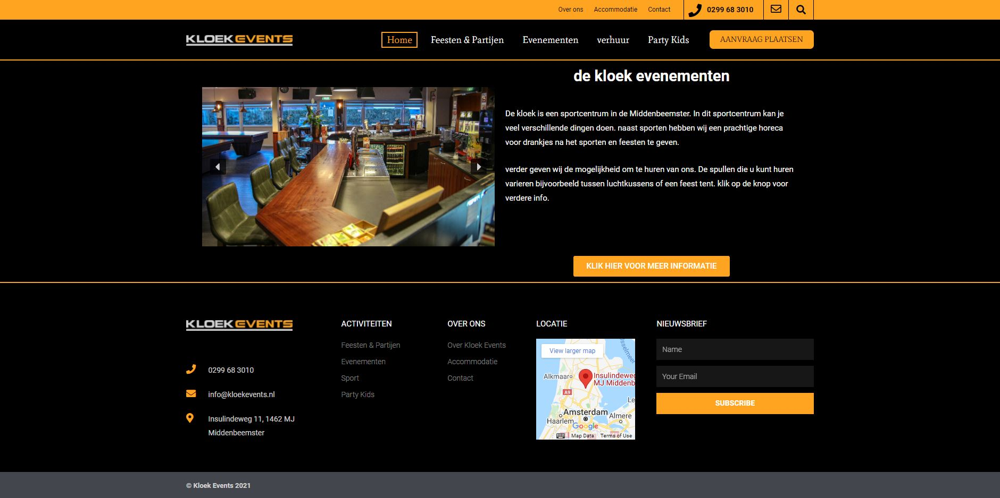

Deze website heb ik gemaakt voor de Kloek.
De Kloek is een sportcentrum in de Middenbeemster. daar werk ik achter de bar, ik ben gevraagd om een website te maken voor de horeca en het verhuren van de spullen zoals feesttenten en voetbalgoals.
Stel je voor dat je een feest of een voorwerp wilt huren gaat dat via een forum en die gaat gelijk naar mijn mail toe. Vanaf daar kan ik contact met u opnemen om verder te kijken naar al de mogelijkheden.
als je geinstresseerd bent kan je hier op de link klikken
gemaakt door Thijn Glas SD1A
